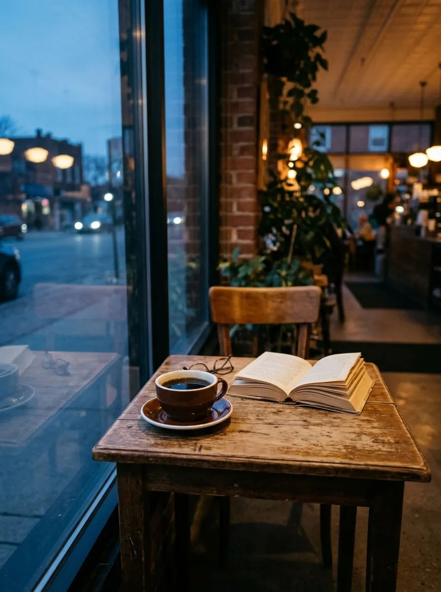
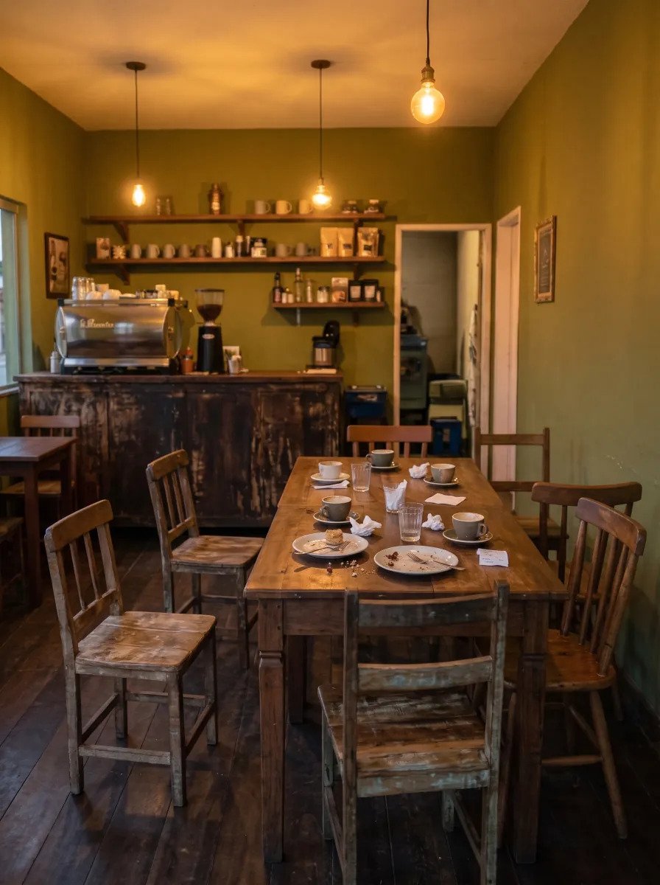
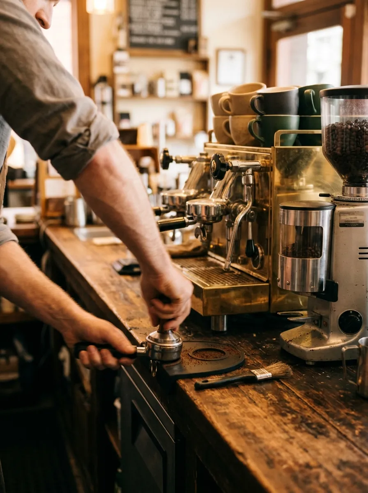
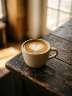
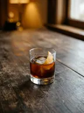
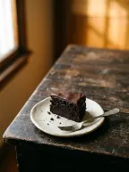
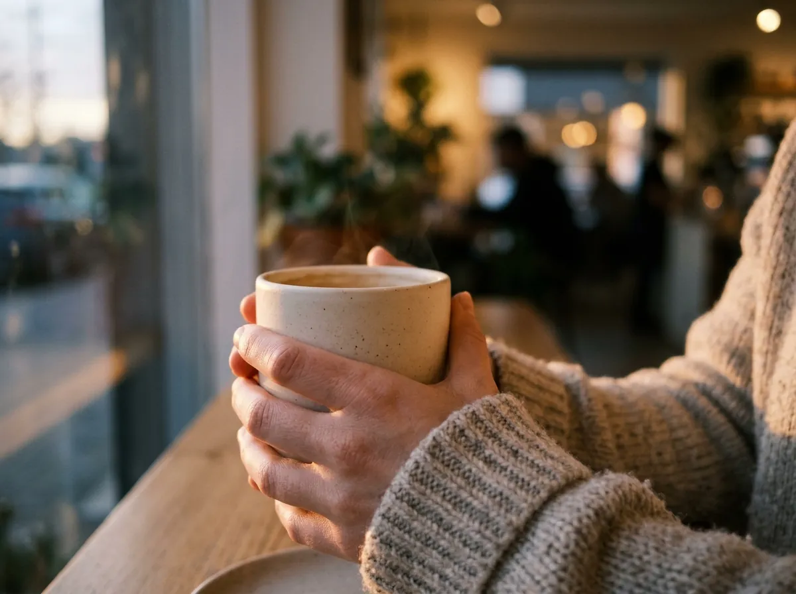

Café Vagar apresenta
uma pausa em cinco atosRua das Flores, 128, Florianópolis
O tempo passa.
O café fica.
Há dias que pedem pressa.
Outros pedem café.
Não é só sobre tomar um café. É sobre encontrar um lugar onde você não precisa olhar para o relógio.
- O grão é moído na hora do pedido, nunca antes.
- A mesa do fundo cabe seis.
- Tem wi-fi, mas quase ninguém lembra de pedir a senha.
Três jeitos de ficar.
-

O silêncio
As mesas da janela são de quem chega sozinho.
-

A conversa
A mesa do fundo costuma terminar a tarde com mais gente do que começou.
-

O balcão
Do balcão dá para acompanhar o café sendo feito.
O ritual
- 00:00. O espresso descansa na xícara.
- 00:20. O leite entra devagar, rente à borda.
- 00:45. Pronto. Agora é com você.
Poucas coisas, feitas com tempo.
Cardápio e preços fictícios, criados para esta demonstração.
-
Espresso da casa
Café especial, notas de chocolate amargo e caramelo.
R$ 9
-

Flat white
Espresso duplo com leite vaporizado.
R$ 15
-

Cold brew
Extração a frio por 16 horas, notas cítricas.
R$ 16
-
Croissant de manteiga
Folhado, assado toda manhã.
R$ 13
-

Bolo de cacau
Massa úmida com ganache meio amarga.
R$ 17
Quem fica mais um pouco.

Meu escritório favorito tem cheiro de café.
Vim pelo croissant. Fiquei pelo resto da tarde.
Depoimentos fictícios, escritos para esta demonstração.
Tem lugar para mais um café.
- Endereço
- Rua das Flores, 128
Centro, Florianópolis, SC - Horários
- Segunda a sexta, 8h às 19h
Sábado, 9h às 18h
Domingo, fechado